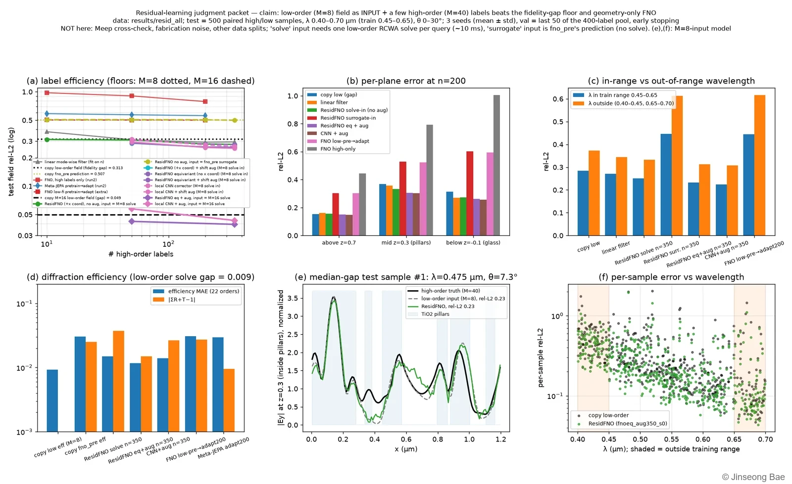
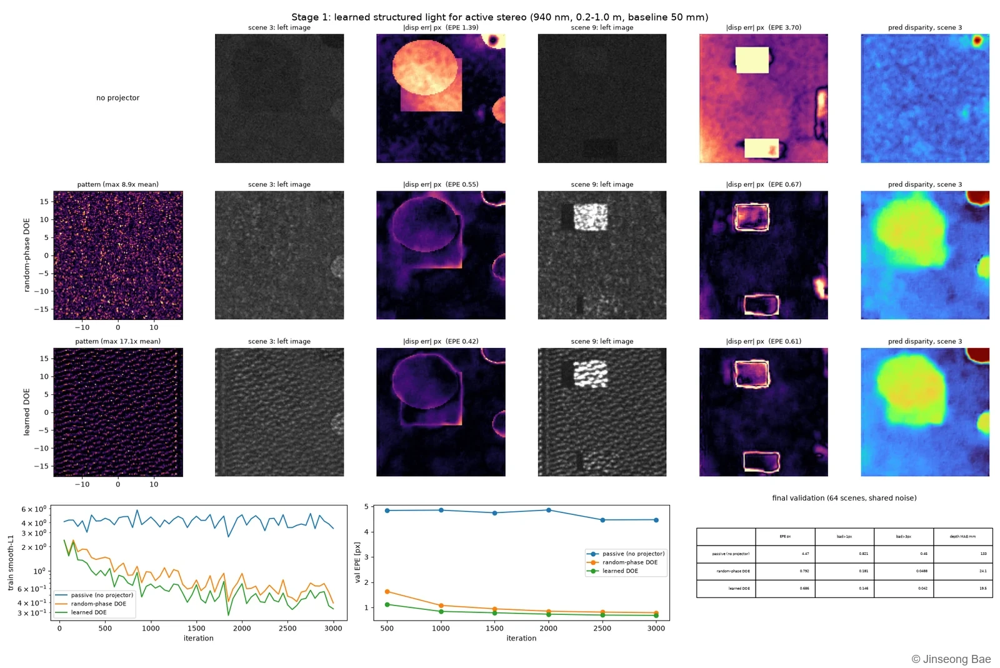
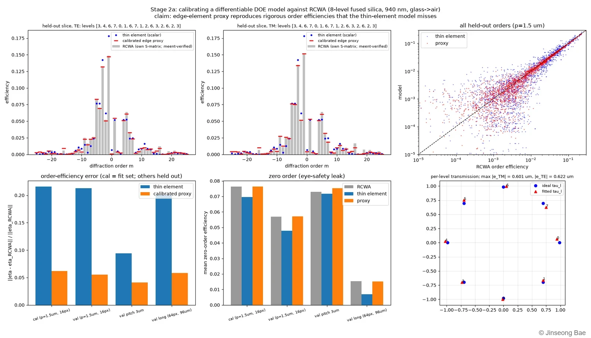
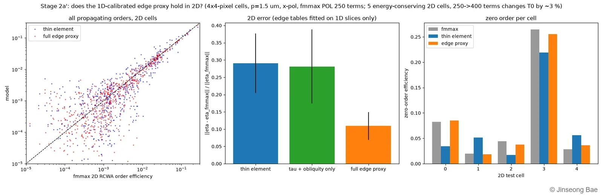

A. Meta-JEPA 파일럿 — No-go와 그 이유
고충실도 RCWA는 비쌉니다. 싼 저차 RCWA 수만 개로 잠재 표현을 배우고, 고차 라벨 50개 이하로 적응하면 쓸 만한 surrogate가 될까? 시작 전에 Go 조건을 정해 두었습니다: 라벨 50개 이하에서 FNO 대비 오차 절반 이하, 잠재 표현 probe R² 0.9 이상.
결론은 No-go입니다. 더 중요한 결과는 왜 안 되는지를 분리한 것입니다. 처음에는 저차와 고차의 충실도 차이 때문이라고 봤지만, 그 차이를 없앤 시험에서도 오차가 그대로여서 원인은 처음 보는 형상으로의 일반화였습니다.
설정
| 물리 모델 | 2D TE, fmmax RCWA. 주기 1.2 µm, TiO₂(n 2.4) 기둥 8슬롯(폭·오프셋 16 파라미터), 높이 0.6 µm, 유리 기판 n 1.45 |
|---|---|
| 조건 | λ 0.40–0.70 µm, 입사각 0–30° |
| 충실도 | 저차 M = 8 → M = 16, 고차 M = 40 (Fourier 차수 반폭) |
| 출력 | 세 평면의 근접장 Ey·Hx·Hz와 |m| ≤ 3 회절 효율 |
| 데이터 | 사전학습 저차 20,000개(λ 0.45–0.65) · 적응 고차 최대 200개 · 테스트 고차 500개(범위 밖 파장 포함) |
| 모델 | 3.0M 파라미터. 슬롯 transformer 인코더, (λ, θ) 조건 predictor, INR 디코더, 효율 보조 헤드. 비교: FNO 1D, 처음부터 학습 |
| 오차 지표 | 테스트 근접장의 상대 L2 (0.5 ≈ 50 %) |

결과와 원인 분리
| M = 8 사전학습 | Meta-JEPA 0.597 → 적응 200개 0.559 · FNO 0.507 → 0.500. probe R² 약 0.1 |
|---|---|
| M = 16 사전학습 | FNO 0.532 · Meta-JEPA 0.538 → 적응 0.525 · 고차 라벨만 0.788 · 큰 FNO(폭 256) 0.478 |
| 학습 곡선 (FNO) | N = 2.5k/5k/10k/20k → 0.610/0.579/0.560/0.532, 오차 ∝ N−0.07 |
| 잔차 학습 | 저차 해를 입력으로 넣고 고차와의 차이만 배우면 0.313 → 0.251 (M = 8), 0.049 → 0.039 (M = 16) |
원인을 가른 대조 실험
충실도 차이가 원인이라면, 고차 대신 학습과 같은 저차(M = 16)로 푼 보류 테스트에서는 오차가 크게 줄어야 합니다. 결과는 0.529로 거의 같았습니다. 충실도 차이를 0으로 만들어도 오차가 남으니, 남은 오차는 새 형상에 대한 일반화 오차입니다. M = 8 시점의 "충실도 차이가 지배한다"는 첫 판단을 이 실험이 뒤집었습니다.



0.5 근처에 모든 모델이 멈춘 것은 아닙니다. 큰 FNO는 0.478까지 내려갔지만 학습 손실이 0.0003으로 과적합 상태였습니다. 그래서 "≈ 0.48–0.54"로 적습니다.
B. 미분 이미징 — 공정 모델을 넣은 HW·SW 공동 설계
학습형 구조광 스테레오(Polka Lines, CVPR 2021)를 오픈소스 PADO로 단순화해 재현했습니다. 회절 광학 소자(DOE)가 점 패턴을 쏘고, 신경망이 두 카메라 영상에서 깊이를 복원합니다. 문제는 이상적인 얇은 소자 모델로 학습한 DOE가 실제 제작(8단계 높이 양자화, 식각 오차, 가장자리 회절)을 거치면 무너진다는 점입니다.
그래서 RCWA로 보정한 공정 모델을 미분 가능하게 만들어 학습 루프에 넣었습니다. 특히 눈 안전과 직결되는 0차 누설(회절되지 않고 곧장 나가는 빛)이 얼마나 줄어드는지를 봤습니다.
설정
| 광학 | 940 nm, DOE 128 × 128 (피치 1.5 µm), 시야 36°, 카메라 기준선 50 mm, 깊이 0.2–1 m, Fraunhofer 전파 |
|---|---|
| 센서 | 1/z² 감쇠, 가우시안 블러 σ 0.7, 샷·읽기 노이즈, 포화 |
| 공정 모델 | 자체 1D RCWA(S-행렬 + Li 인수분해)로 보정한 가장자리 프록시. 용융 실리카 n 1.451, 8단계 높이, 식각 오차 σ 3 % |
| 복원망 | 상관 cost volume → 2D U-Net → soft-argmin |
| 손실 | smooth-L1(disparity) + 200 · max(0, 0차 − 0.5 %) |






결과

| 공정 효과 분해 | EPE 0.69(이상) → 1.02 → 1.09 → 1.28 → 1.28 px (8단계, 엄밀 모델, 식각 오차 순) |
|---|---|
| 신경망만 재학습 | EPE 0.739 px, 0차 3.2 % 그대로 |
| DOE까지 공동 설계 | EPE 0.708 px, 0차 0.06 % (8회 평균 0.00063 ± 0.00060) |
대조군 덕분에 역할이 갈렸습니다. 깊이 오차 회복은 대부분 신경망 몫이고, 0차 억제는 하드웨어(DOE) 몫입니다. 같은 높이 이웃 비율은 0.13으로 그대로라, 0차 억제는 구조를 매끈하게 만들어서가 아니라 위상 균형을 조정해서 얻었습니다.
한계와 주장하지 않는 것
주장하는 것
- Meta-JEPA 실패의 원인이 충실도가 아니라 형상 일반화임을 대조 실험으로 분리했다
- 공정 모델을 학습에 넣으면 0차 누설을 하드웨어 쪽에서 줄일 수 있다
주장하지 않는 것
- Meta-JEPA는 seed 1개, Meep 교차 검증과 비주기 구조 시험은 없다
- 공동 설계 DOE 전체는 풀웨이브로 계산하지 않았다 (2D 검증 셀 5개)
- DOE 공동 설계의 깊이 정확도 추가 이득은 0.03 px로 작다
- 제작·실측 촬영은 하지 않았다
코드 구성
Meta-JEPA
data/gen_fmmax.py— RCWA 데이터 생성 (R + T = 1 ± 1e-14 검사)model/metajepa.py,train.py— 모델과 사전학습·적응·FNO·잔차 모드run_m16*.py,make_figure*.py— 재실험과 판정 그림
미분 이미징
stage1_polka/model.py,train.py— 구조광 스테레오 재현stage2_fab/rcwa1d.py,proxy.py,fabsim.py— RCWA와 공정 프록시stage2_fab/train_fab.py --mode joint,eval_fab.py— 공동 설계와 평가
2026년 10월 31일 – 11월 2일 작업입니다. 미분 이미징은 공개 자료(PADO, Polka Lines, DPS)만 사용했습니다.